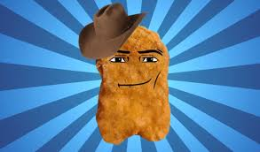

Привет! Сегодня я хочу тебе показать мемную галерею! У меня уже была прошлая версия которая будет в подвале сайта. А также в подвале можно будет найти версию сайта на украинском.
>>>>>>ПЕРВЫЙ МЕМ<<<<<<
Стоять ковбой

В тиктоке сейчас популярные поющие и танцующие нагетсы с лицом из роблокса. А конкретно ковбойская версия с шляпой диким западом на фоне. В общем максимально стереотипный образ ковбоя сохранившивйся в голове у каждого. Но сам мем появился ещё в конце лета 2023. Автором поющих нагетсов это тиктокер Vena. После видео Vena где нагетс пел "I get you" следующий контент был связан с нагетсами где они поят и танцуют. А 29 сентября он выкладывает видео с тем самым звуком и негетсом в ковбойской шляпе. Похожие видео с этой музыкой появились в конце января 2024. И создали новою волну хайпа мема с уже новыми продуктами из KFC, фруктами, овощами и кем только угодно. В каких-то видео был даже мини сюжеты c нагетсами. Песня на фоне с поющим нагетсом называется "Котон айджо" традиционый американский катрифол, популярный в разное время на територии США и Канады. А вариант из мема-это кавер от группы "Rednex" вышедший в 1994 году.
Песня кавер от группы "Rednex"
НЕ ГОВОРИ ТАК!
Героиня мема "Фарида 1205" или же тётя мотя. С конца 2020 года ведет свой тикток акаунт и записывает видео в основном юмористического характера. Женщина даже попадала в местные новости. Текст новостей: "Жительница Усть-Каменогорска Бросила работу на рынке и ушла в тикток". Для некоторых наверно звучит как мечта. Ну и вот "Фарида 1205" в начале октября 2023 года записала тикток где озвучила фильм с (эмоциями). На этом видео уже около 13млн просмотров. Урывок с этого мема чаще всего используют в качестве реакции на что-либо. И не обезательно это связано как-то по смыслу.
| Оценка мемов: | Название: | Оценка: |
| НЕ ГОВОРИ ТАК! | 6/10 | |
| Стоять ковбой | 4/10 |